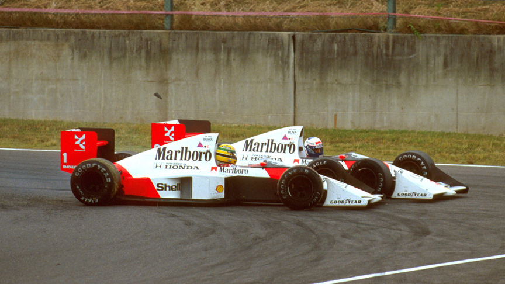
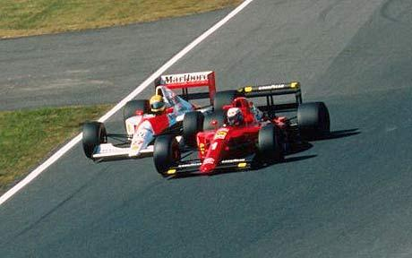
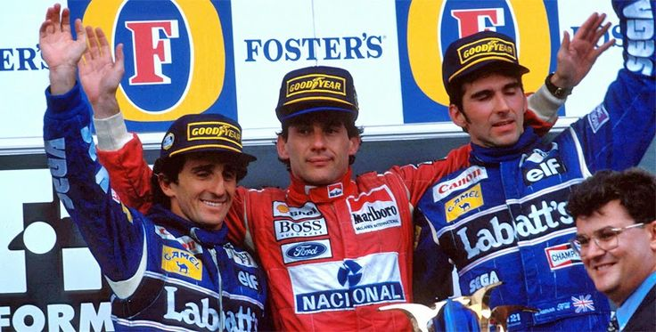

🤝 Colegas e Inimigos: A Era McLaren 1988
Em 1988, Senna juntou-se a Prost na McLaren. O carro, MP4/4, era tão dominante que venceu 15 das 16 corridas.
A tensão começou no GP de Portugal, onde Senna "espremeu" Prost contra o muro a 290 km/h. Prost venceu, mas declarou: "Se ele quer tanto o título que está disposto a morrer por isso, o problema é dele". Senna levou o título naquele ano após uma recuperação épica no Japão.

🛑 O Ponto sem Retorno: Suzuka 1989
A decisão do título. Senna precisava vencer; Prost só precisava que Senna não pontuasse. Na chicane Casio, Senna tentou uma ultrapassagem impossível e Prost fechou a porta. Os dois colidiram.
Prost abandonou, Senna voltou com ajuda dos fiscais e venceu, mas foi desclassificado de forma polêmica pela FIA. O título ficou com o francês, selando o divórcio definitivo entre os dois.

⚡ Olho por Olho: Suzuka 1990
Desta vez, Prost estava na Ferrari e Senna na McLaren. Os papéis se inverteram: se ninguém pontuasse, Senna era campeão.
Irritado por não ter a pole position no lado limpo da pista, Senna não tirou o pé na primeira curva e atingiu a traseira da Ferrari de Prost a 270 km/h. Ambos fora. Senna bicampeão. Foi a resposta bruta ao ocorrido no ano anterior.

🕊️ O Último Pódio: Adelaide 1993
Após anos de ódio público, a rivalidade terminou em respeito. Prost se aposentava com seu 4º título. Senna venceu a corrida.
No pódio, em um gesto histórico, Senna puxou Prost para o degrau mais alto. Meses depois, antes de sua morte em Ímola, Senna enviou uma mensagem via rádio para Prost, que estava comentando na TV: "Alain, sinto sua falta".
A rivalidade Senna-Prost não foi apenas sobre quem era o mais rápido, mas sobre dois gênios que elevaram o limite do que era possível fazer dentro de um cockpit.